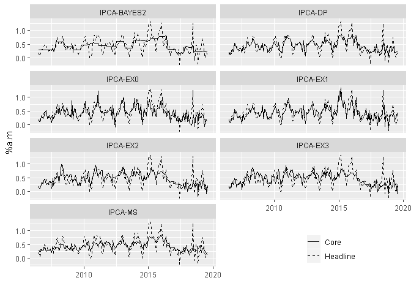

wavcoreinf provides a flexible estimation and evaluation of core inflation from wavelet-based signal estimation methods. Functionals are developed to facilitate the estimation of several specifications permitting the selection of the best one according to specific criteria established in the core inflation literature.
You can install the development version from GitHub with:
This is a basic example which shows you how to obtain a good core inflation measure from wavelet:
library(wavcoreinf)
library(dplyr)
library(tidyr)
library(ggplot2)
library(tibble)
library(purrr)
library(rlang)
library(lubridate)
library(forecast)
library(ellipsis)pq <- lags(2, 1)
ebthr_xform <- list(wt = c("dwt", "modwt"))
ebthr_wt <- list(
wf = c("haar", "la8"),
n.levels = 3:4
)
ebthr_ebwav <- list(
vscale = c("level", "independet"),
a = 3.83,
prior = c("laplace", "cauchy")
)
ebthr_args <- wav_args_ebthr(ebthr_xform, ebthr_wt, ebthr_ebwav)
ebthr_smooth <- wav_smooth(ipca, ebthr_args)
ebthr_table <- wcore_table(ebthr_smooth, ipca)
ebthr_error_mean <- error_wave_summary(3, x = ebthr_args, y = ipca, lags = pq, k = 15, RMSE = TRUE)
ebthr_summary <- wcore_summary_fcast(ipca, ebthr_table, ebthr_error_mean)
ebthr_best <- ebthr_summary %>%
wcore_summary_best(d = c(1, 1, 1, 1, 2))
ebthr_best_median <- wcore_best_median(ebthr_best)
bayes2_ts <- ts(ebthr_best_median, start = ts_start, freq = 12)inf <- tibble(
date = time(ipca), ipca,
`IPCA-MS` = ipcams,
`IPCA-EX0` = ipcaex0,
`IPCA-EX1` = ipcaex1,
`IPCA-DP` = ipcadp,
`IPCA-EX2` = ipcaex2,
`IPCA-EX3` = ipcaex3,
`IPCA-BAYES2` = bayes2_ts[, 2]
)
inf %>%
gather(-1:-2, key = "measure", value = "core") %>%
ggplot(aes(x = date)) +
geom_line(aes(y = core, linetype = "Core")) +
facet_wrap(~measure, nrow = 4) +
geom_line(aes(y = ipca, linetype = "Headline")) +
labs(x = "", y = "%a.m", linetype = "") +
theme(legend.position = c(.8, .1)) + # legend.position = "bottom") +
scale_linetype_manual(values = c(Core = "solid", Headline = "dashed")) 